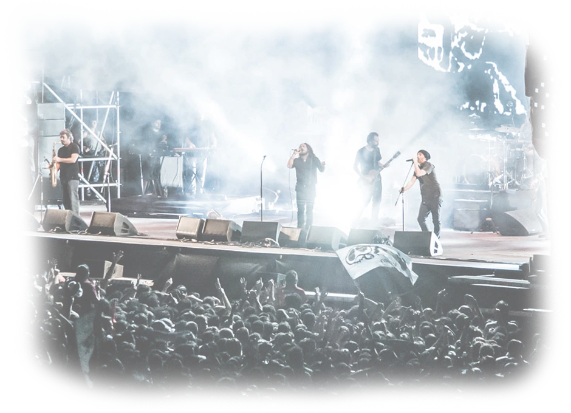

La Vela Puerca es una banda uruguaya de rock formada en 1995, integrada por Sebastián Teysera, alias el Enano (voz); Nicolás Mandril Lieutier (bajo); Sebastián Cebolla Cebreiro (voz); José Pepe Canedo (batería); Rafael Di Bello (guitarra); Santiago Butler (guitarra); Carlos Coli Quijano (saxo); Alejandro Piccone (trompeta) y Diego Méndez (teclados). Lucas De Azevedo fue baterista de la banda hasta mitad del 2004, cuando tuvo que abandonar la banda debido a problemas de salud. Protagonista de la camada del nuevo rock uruguayo de la segunda mitad de los noventa, es actualmente una de las agrupaciones de su país con mayor convocatoria. Fue una de las pioneras en proyectarse para públicos internacionales. BY Wikipedia
La Vela Puerca ha hecho entrega de múltiples álbumes a lo largo de los años. Algunos en vivo y otros simplemente en el formato de estudio, pero nunca decepcionando.